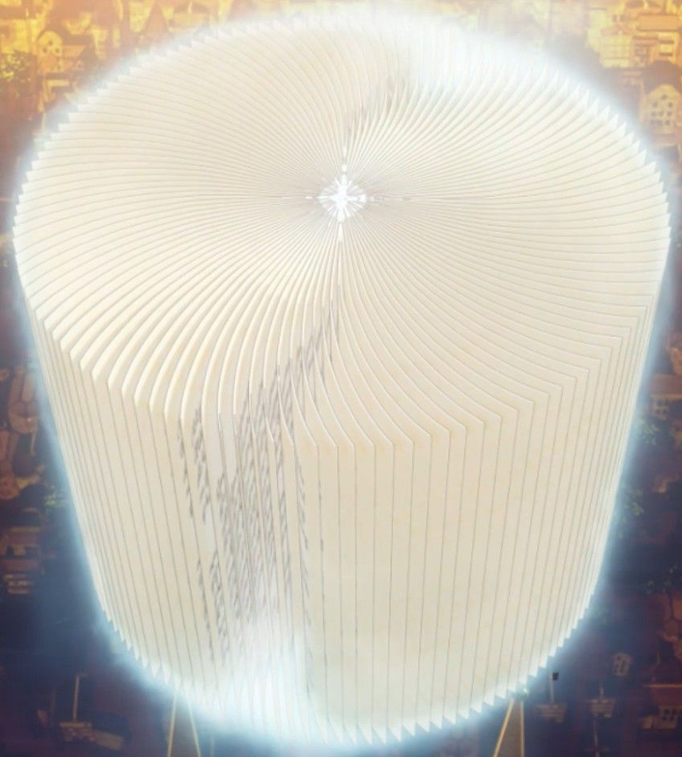

Julius Novachrono - esse é o atual Rei Mago do Reino de Clover, tendo uma personalidade bem similar a de Asta, um tanto cômico, infantil e deslumbrado. Porém, ele é extremamente poderoso (não é à toa que ocupa tal posto) e tem a confiança e respeito de todos os seus cavaleiros.
Durante uma intensa batalha contra Litch, Líder do Sol da meia noite, o Rei Julius foi emboscado e acabou sendo derrotado, pois ele tinha um plano! Ele guardou anos de vida em uma capsula criada pelo primeiro Rei Mago, e voltou a vida mais jovem.

O Grimório de Julius Novachrono é um grimório sem capa que contém vários feitiços baseados em Magia de Tempo. Após a sua morte e renascimento, seu grimório foi reduzido a uma única página.